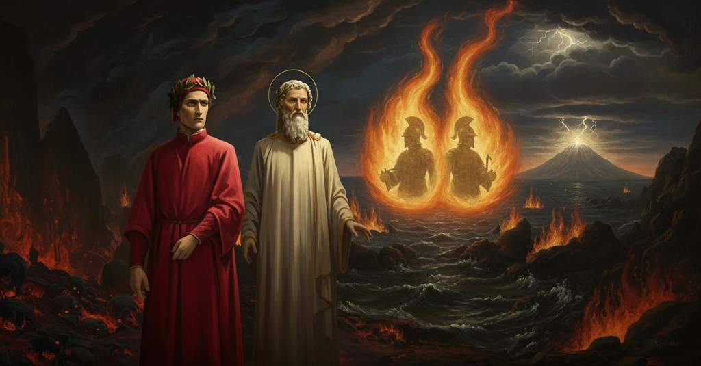

Inferno — Canto 26

1
Godi, Fiorenza, poi che se’ sì grande
Rejoice, Florence, since you are so great
喜べ、フィレンツェよ、そなたは大いなる者なれば
2
che per mare e per terra batti l’ali,
that over sea and land you beat your wings,
海と陸を越えて翼を打ち、
3
e per lo ’nferno tuo nome si spande!
and through Hell your name is spread abroad!
そして地獄にもそなたの名は広まる！
4
Tra li ladron trovai cinque cotali
Among the thieves I found five such
盗人の中に私は五人のそのような者を見出した
5
tuoi cittadini onde mi ven vergogna,
citizens of yours that shame comes to me,
そなたの市民を、ゆえに私は恥じ入り、
6
e tu in grande orranza non ne sali.
and you do not climb to great honor for it.
そしてそなたも大いなる名誉には至らぬ。
7
Ma se presso al mattin del ver si sogna,
But if one dreams the truth near morning,
だが朝方に真実の夢を見るというならば、
8
tu sentirai, di qua da picciol tempo,
you will feel, in a short time from now,
そなたは感じるだろう、ここからさほど時を置かずして、
9
di quel che Prato, non ch’altri, t’agogna.
what Prato, not to mention others, craves for you.
プラートが、いや他ならぬ者たちが、そなたに望むものを。
10
E se già fosse, non saria per tempo.
And if it were already, it would not be too soon.
そしてそれが既に来ていたとしても、早すぎることはなかったろう。
11
Così foss’ ei, da che pur esser dee!
So let it be, since it must be!
そうあれかし、いずれそうなるべきものなれば！
12
ché più mi graverà, com’ più m’attempo.
for it will weigh on me more, as I grow older.
齢を重ねるほど、それは私により重くのしかかるだろうから。
13
Noi ci partimmo, e su per le scalee
We departed from there, and up the stairs
我らはそこを去り、そして階段を
14
che n’avea fatto iborni a scender pria,
which had served us for descending before,
先に下りる際に我らを支えた岩棚を、
15
rimontò ’l duca mio e trasse mee;
my leader climbed back up and drew me after him;
我が導き手は再び登り、そして私を引き上げた。
16
e proseguendo la solinga via,
and pursuing the solitary path,
そして孤独な道を進むと、
17
tra le schegge e tra ’ rocchi de lo scoglio
among the splinters and the rocks of the crag
岩の破片と岩塊の間では
18
lo piè sanza la man non si spedia.
the foot without the hand could not make headway.
足は手なくしては進めなかった。
19
Allor mi dolsi, e ora mi ridoglio
Then I grieved, and now I grieve again
その時私は悲しみ、そして今再び悲しむ
20
quando drizzo la mente a ciò ch’io vidi,
when I direct my mind to what I saw,
私が見たものに心を向ける時、
21
e più lo ’ngegno affreno ch’i’ non soglio,
and I rein in my intellect more than I am used to,
そして常ならぬほどに才知を抑制する、
22
perché non corra che virtù nol guidi;
so that it may not run where virtue does not guide it;
それが徳の導きなくして走らぬように。
23
sì che, se stella bona o miglior cosa
so that, if a good star or a better thing
かくて、もし良き星か、より良きものが
24
m’ha dato ’l ben, ch’io stessi nol m’invidi.
has given me the good, I myself do not deprive myself of it.
私に善を与えたのなら、私自身がそれを妬まぬように。
25
Quante ’l villan ch’al poggio si riposa,
As many as the peasant who rests on a hill,
丘の上で休む農夫が、
26
nel tempo che colui che ’l mondo schiara
in the season when he who lights the world
世界を照らす者が
27
la faccia sua a noi tien meno ascosa,
keeps his face least hidden from us,
その顔を我らにあまり隠さぬ時、
28
come la mosca cede a la zanzara,
when the fly gives way to the mosquito,
蝿が蚊に道を譲るように、
29
vede lucciole giù per la vallea,
sees fireflies down in the valley,
谷間に蛍の光を見る、その数ほどに、
30
forse colà dov’ e’ vendemmia e ara:
perhaps there where he harvests and he plows:
おそらくは彼が葡萄を摘み、耕すであろうその場所で、
31
di tante fiamme tutta risplendea
with so many flames was all resplendent
数多の炎で一面に輝いていた
32
l’ottava bolgia, sì com’ io m’accorsi
the eighth ditch, as I became aware
第八の濠は、私が気づいたように、
33
tosto che fui là ’ve ’l fondo parea.
as soon as I was where the bottom appeared.
私が底の見える場所に着くとすぐに。
34
E qual colui che si vengiò con li orsi
And as he who was avenged by the bears
そして熊をもって復讐した者が
35
vide ’l carro d’Elia al dipartire,
saw Elijah’s chariot at its departure,
エリヤの車が去りゆくのを見た時、
36
quando i cavalli al cielo erti levorsi,
when the horses rose straight up to heaven,
馬たちが天へと高く昇った時、
37
che nol potea sì con li occhi seguire,
that he could not follow it so with his eyes
彼は目でそれを追うことができず、
38
ch’el vedesse altro che la fiamma sola,
as to see anything but the flame alone,
ただ一つの炎のほかには何も見えず、
39
sì come nuvoletta, in sù salire:
like a little cloud, ascending upward:
さながら小さな雲のように、上へ昇っていくのを、
40
tal si move ciascuna per la gola
so each one moves along the throat
そのように各々の炎は溝の
41
del fosso, ché nessuna mostra ’l furto,
of the ditch, for none shows its theft,
喉元を動き、どれもその盗みを示さず、
42
e ogne fiamma un peccatore invola.
and every flame steals away a sinner.
そして各々の炎が一人の罪人を包み隠している。
43
Io stava sovra ’l ponte a veder surto,
I was standing on the bridge, risen up to see,
私は橋の上に立って見つめていた、
44
sì che s’io non avessi un ronchion preso,
so that if I had not taken hold of a rock,
もし岩の突起を掴んでいなければ、
45
caduto sarei giù sanz’ esser urto.
I would have fallen down without being pushed.
押されずとも下に落ちていただろう。
46
E ’l duca che mi vide tanto atteso,
And the duke who saw me so intent,
そして私がそれほど熱心に見つめているのを見た導き手は、
47
disse: «Dentro dai fuochi son li spirti;
said: “Within the fires are the spirits;
言った、「炎の中には霊たちがいる。
48
catun si fascia di quel ch’elli è inceso».
each one is swathed in that which burns him.”
それぞれが自らを燃やすもので包まれているのだ」。
49
«Maestro mio», rispuos’ io, «per udirti
“My master,” I replied, “by hearing you
「師よ」と私は答えた、「あなたのお言葉を聞いて
50
son io più certo; ma già m’era avviso
I am more certain; but I had already supposed
私はより確信しました。しかしすでに予感はしており
51
che così fosse, e già voleva dirti:
that it was so, and I already wanted to tell you:
そうであろうと、そしてすでにお尋ねしたいと思っていました。
52
chi è ’n quel foco che vien sì diviso
who is in that fire that comes so divided
あの炎の中にいるのは誰ですか、それは上がかくも分かれ
53
di sopra, che par surger de la pira
at the top, that it seems to rise from the pyre
まるでエテオクレが兄弟と共に置かれた
54
dov’ Eteòcle col fratel fu miso?».
where Eteocles with his brother was placed?”
火葬の薪から立ち上るかのようです」。
55
Rispuose a me: «Là dentro si martira
He replied to me: “Therein are tormented
彼は私に答えた、「その中で苦しんでいるのは
56
Ulisse e Dïomede, e così insieme
Ulysses and Diomedes, and so together
オデュッセウスとディオメデスだ。そして彼らは共に
57
a la vendetta vanno come a l’ira;
they go to the vengeance as they went to the wrath;
神の復讐へと赴く、怒りの時と同じように。
58
e dentro da la lor fiamma si geme
and within their flame is lamented
そして彼らの炎の中では嘆かれている、
59
l’agguato del caval che fé la porta
the ambush of the horse that made the gate
トロイアの木馬の策略が。それは門を開き、
60
onde uscì de’ Romani il gentil seme.
whence issued the noble seed of the Romans.
そこからローマ人の高貴なる種子が出たのだ。
61
Piangevisi entro l’arte per che, morta,
Therein is wept the artifice for which, dead,
その中では策略が泣かれている。そのために死してなお、
62
Deïdamìa ancor si duol d’Achille,
Deidamia still sorrows for Achilles,
デイダミアは今もアキレウスを嘆き、
63
e del Palladio pena vi si porta».
and for the Palladium punishment is borne there.”
そしてパラディオンの罪がそこで償われている」。
64
«S’ei posson dentro da quelle faville
“If they can within those sparks
「もし彼らがそれらの炎の中から
65
parlar», diss’ io, «maestro, assai ten priego
speak,” I said, “master, I greatly pray you
話すことができるのでしたら」と私は言った、「師よ、幾重にもお願いし
66
e ripriego, che ’l priego vaglia mille,
and re-pray, that the prayer be worth a thousand,
重ねてお願いします、その願いが千の価値を持つように、
67
che non mi facci de l’attender niego
that you not deny me the waiting
私が待つことをお断りにならないでください、
68
fin che la fiamma cornuta qua vegna;
until the horned flame comes here;
あの角のある炎がここに来るまで。
69
vedi che del disio ver’ lei mi piego!».
you see that with desire I bend toward it!”
ご覧ください、私は欲望のあまりそちらへ身を乗り出しています！」。
70
Ed elli a me: «La tua preghiera è degna
And he to me: “Your prayer is worthy
すると彼は私に言った、「そなたの願いは多くの
71
di molta loda, e io però l’accetto;
of much praise, and therefore I accept it;
賞賛に値する。ゆえに私はそれを受け入れよう。
72
ma fa che la tua lingua si sostegna.
but make your tongue restrain itself.
しかし、そなたの舌は控えさせておくがよい。
73
Lascia parlare a me, ch’i’ ho concetto
Let me speak, for I have conceived
私に話させよ。私はそなたが望むことを
74
ciò che tu vuoi; ch’ei sarebbero schivi,
that which you want; for they would be disdainful,
理解しているゆえ。彼らは、ギリシャ人であったがために、
75
perch’ e’ fuor greci, forse del tuo detto».
because they were Greeks, perhaps of your speech.”
おそらくそなたの言葉を厭うだろうから」。
76
Poi che la fiamma fu venuta quivi
After the flame had come here
やがて炎が、我が導き手にとって
77
dove parve al mio duca tempo e loco,
to where it seemed to my duke time and place,
時と場所がふさわしいと思われたところまで来ると、
78
in questa forma lui parlare audivi:
in this form I heard him speak:
私は彼がこの形で話すのを聞いた。
79
«O voi che siete due dentro ad un foco,
“O you who are two within one fire,
「おお、一つの炎の中に二人いる汝らよ、
80
s’io meritai di voi mentre ch’io vissi,
if I deserved of you while I lived,
もし私が生きていた時、汝らに功績があったなら、
81
s’io meritai di voi assai o poco
if I deserved of you much or little
もし私が汝らに多くの、あるいは少しでも功績があったなら、
82
quando nel mondo li alti versi scrissi,
when in the world I wrote the high verses,
私がこの世で高貴な詩を書いた時に、
83
non vi movete; ma l’un di voi dica
do not move; but let one of you say
動かずにいるがよい。そして汝らのうち一人が語れ、
84
dove, per lui, perduto a morir gissi».
where, by him, lost he went to die.”
いかにして、迷い、死に至ったのかを」。
85
Lo maggior corno de la fiamma antica
The greater horn of the ancient flame
古の炎のより大きな角が
86
cominciò a crollarsi mormorando,
began to flicker, murmuring,
ぶつぶつと呟きながら揺れ始め、
87
pur come quella cui vento affatica;
just like one that the wind wearies;
さながら風に苦しめられる炎のように。
88
indi la cima qua e là menando,
then moving its tip here and there,
それから頂をあちこちへと振りながら、
89
come fosse la lingua che parlasse,
as if it were the tongue that was speaking,
まるで話している舌であるかのように、
90
gittò voce di fuori e disse: «Quando
it cast a voice forth and said: “When
外へと声を放ち、言った、「私が
91
mi diparti’ da Circe, che sottrasse
I departed from Circe, who had withheld
私はキルケから離れた、彼女は私を長引かせた
92
me più d’un anno là presso a Gaeta,
me more than a year there near Gaeta,
ガエータの近くで一年以上も、
93
prima che sì Enëa la nomasse,
before Aeneas had so named it,
アエネアスがそのように名付けるよりも前に、
94
né dolcezza di figlio, né la pieta
neither sweetness for my son, nor the piety
息子の愛らしさも、また老いた父への
95
del vecchio padre, né ’l debito amore
of my old father, nor the due love
孝心も、またペネロペを喜ばせるべき
96
lo qual dovea Penelopè far lieta,
which should have made Penelope happy,
当然の愛も、
97
vincer potero dentro a me l’ardore
could conquer within me the ardor
私の内にあった情熱を打ち負かすことはできなかった、
98
ch’i’ ebbi a divenir del mondo esperto
that I had to become expert of the world
私が世界の経験者となり、
99
e de li vizi umani e del valore;
and of human vices and of virtue;
人間の悪徳と徳とを知るという情熱を。
100
ma misi me per l’alto mare aperto
but I set myself forth on the deep open sea
だが私は広大な外洋へと身を投じた
101
sol con un legno e con quella compagna
alone with one ship and with that small
ただ一艘の船と、私を見捨てなかった
102
picciola da la qual non fui diserto.
company by which I was not deserted.
少数の仲間たちと共に。
103
L’un lito e l’altro vidi infin la Spagna,
The one shore and the other I saw as far as Spain,
一方の岸も他方も見た、スペインの果てまで、
104
fin nel Morrocco, e l’isola d’i Sardi,
as far as Morocco, and the island of the Sardinians,
モロッコの果てまで、そしてサルデーニャの島を、
105
e l’altre che quel mare intorno bagna.
and the others that sea bathes round about.
そしてその海が周りを洗う他の島々を。
106
Io e ’ compagni eravam vecchi e tardi
I and my companions were old and slow
私と仲間たちは老い、動きも鈍くなっていた
107
quando venimmo a quella foce stretta
when we came to that narrow strait
我々があの狭い海峡に来た時には
108
dov’ Ercule segnò li suoi riguardi
where Hercules marked his limits
そこはヘラクレスがその標を記した場所
109
acciò che l’uom più oltre non si metta;
so that man should not put himself farther out;
人がそれ以上進まぬようにと。
110
da la man destra mi lasciai Sibilia,
on my right hand I left Seville,
右手にはセビリアを後にし、
111
da l’altra già m’avea lasciata Setta.
on the other I had already left Ceuta.
左手にはすでにセウタを後にしていた。
112
“O frati”, dissi “che per cento milia
“O brothers,” I said, “who through a hundred thousand
「おお、兄弟たちよ」私は言った「幾万もの
113
perigli siete giunti a l’occidente,
perils have reached the west,
危険を越えて西の果てにたどり着いた者たちよ、
114
a questa tanto picciola vigilia
to this so small a vigil
この我々の感覚に残された
115
d’i nostri sensi ch’è del rimanente
of our senses which remains
あまりに短いこの残された時間に、
116
non vogliate negar l’esperïenza,
do not wish to deny the experience,
太陽の背後にある、人のいない世界の
117
di retro al sol, del mondo sanza gente.
behind the sun, of the world without people.
経験を拒むことなかれ。
118
Considerate la vostra semenza:
Consider your origin:
汝らの出自を考えよ。
119
fatti non foste a viver come bruti,
you were not made to live like brutes,
汝らは獣のように生きるために作られたのではない、
120
ma per seguir virtute e canoscenza”.
but to follow virtue and knowledge.”
徳と知識とを追うために作られたのだ」。
121
Li miei compagni fec’ io sì aguti,
My companions I made so keen
私はこの短い演説で、仲間たちを
122
con questa orazion picciola, al cammino,
with this brief oration, for the journey,
旅路へと駆り立てたので、
123
che a pena poscia li avrei ritenuti;
that I could hardly then have held them back;
そのあとではほとんど彼らを押し留めることはできなかっただろう。
124
e volta nostra poppa nel mattino,
and turning our stern to the morning,
そして我々の船尾を朝に向け、
125
de’ remi facemmo ali al folle volo,
of our oars we made wings for the mad flight,
櫂を狂気の飛翔のための翼とし、
126
sempre acquistando dal lato mancino.
always gaining on the left-hand side.
常に左手へと進路を取り続けた。
127
Tutte le stelle già de l’altro polo
All the stars of the other pole
すでに夜はもう一方の極の星々すべてを
128
vedea la notte, e ’l nostro tanto basso,
the night now saw, and ours so low,
見ていた、そして我々の極はあまりに低く、
129
che non surgëa fuor del marin suolo.
that it did not rise from the ocean floor.
海の面から昇らなかった。
130
Cinque volte racceso e tante casso
Five times rekindled and as many times quenched
月下の光は五度灯され、
131
lo lume era di sotto da la luna,
was the light from beneath the moon,
同じだけ消えた、
132
poi che ’ntrati eravam ne l’alto passo,
since we had entered the high pass,
我々が高き航路に入ってから。
133
quando n’apparve una montagna, bruna
when there appeared to us a mountain, dark
その時我々に一つの山が現れた、距離ゆえに
134
per la distanza, e parvemi alta tanto
with distance, and it seemed to me so high
褐色で、そして私には、かつて見た
135
quanto veduta non avëa alcuna.
as I had never seen any.
いかなる山よりも高く思われた。
136
Noi ci allegrammo, e tosto tornò in pianto;
We rejoiced, and soon it turned to weeping;
我々は喜んだが、それはすぐに嘆きに変わった。
137
ché de la nova terra un turbo nacque
for from the new land a whirlwind was born
なぜならその新しい地から嵐が生まれ
138
e percosse del legno il primo canto.
and struck the forepart of the ship.
船の船首を打ちつけたからだ。
139
Tre volte il fé girar con tutte l’acque;
Three times it made it spin with all the waters;
それは船をすべての水と共に三度回転させた。
140
a la quarta levar la poppa in suso
at the fourth to lift the stern up
四度目には船尾を上へと持ち上げ
141
e la prora ire in giù, com’ altrui piacque,
and the prow to go down, as it pleased Another,
船首は下へ、とあるお方の望むままに、
142
infin che ’l mar fu sovra noi richiuso».
until the sea was closed over us.”
ついに海が我々の上で閉じられるまで」。